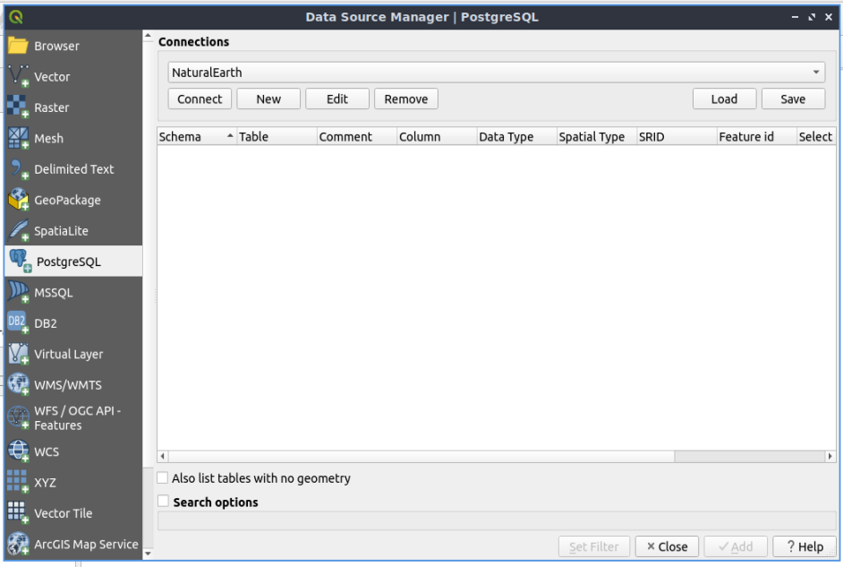
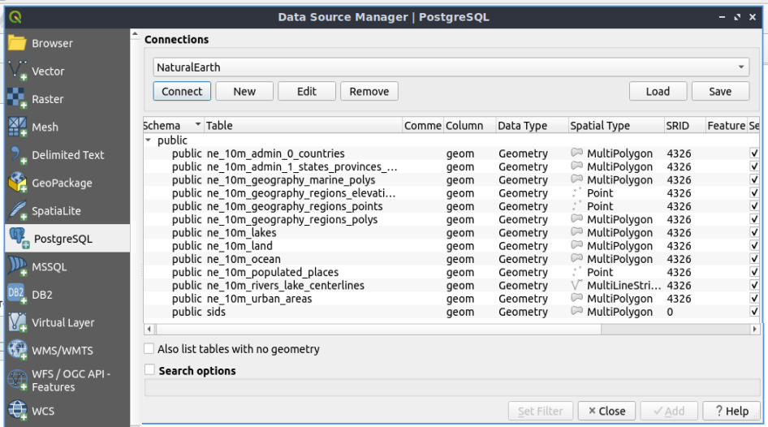
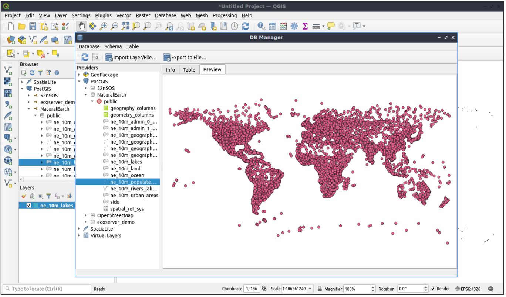
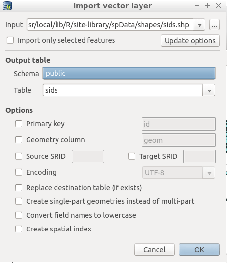
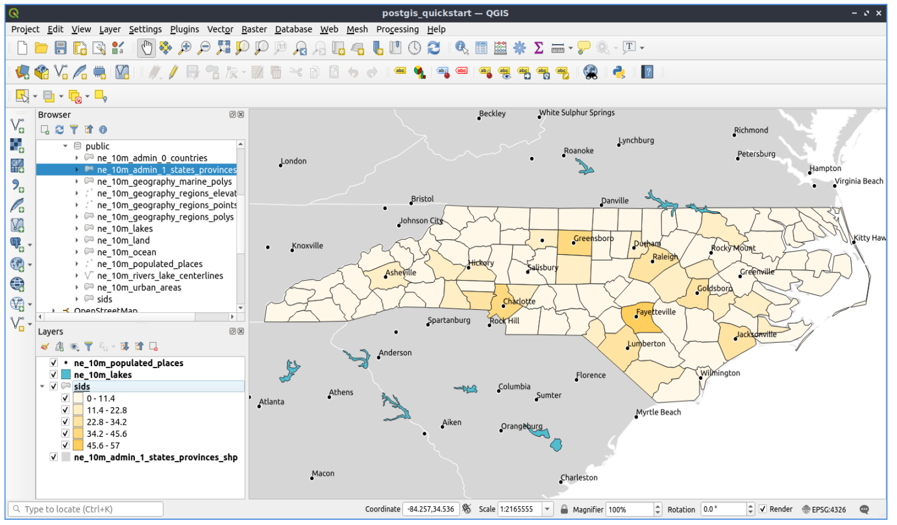
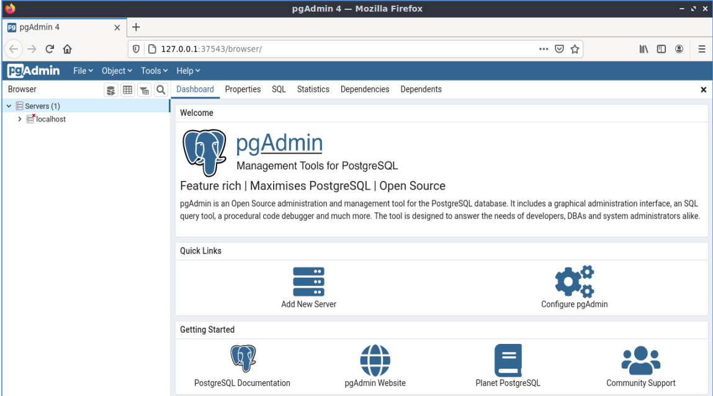
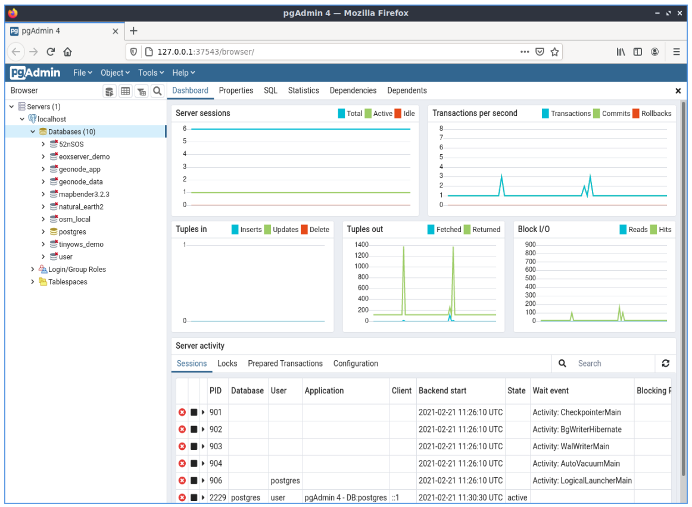
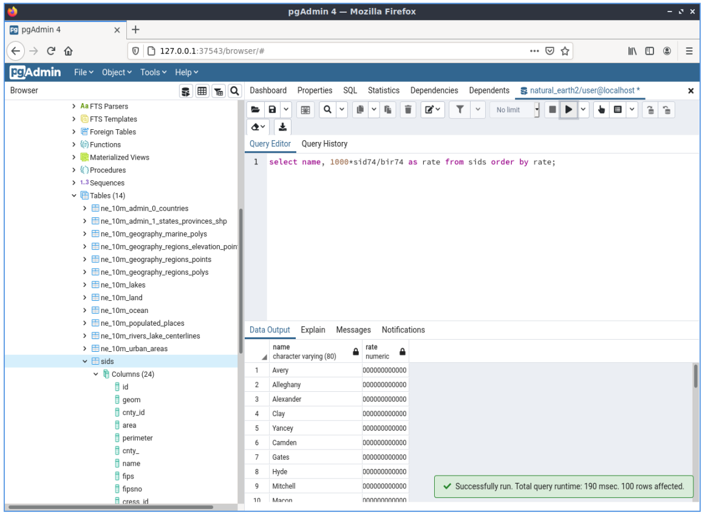

PostGIS Quickstart¶
PostGIS ist die räumliche Erweiterung der relationalen Datenbank PostgreSQL. PostGIS ermöglicht die Speicherung, Abfrage und Bearbeitung von räumlichen Daten. In diesem Zusammenhang werden wir ‚PostgreSQL‘ verwenden, wenn wir über generelle Datenbankfunktionen sprechen und ‚PostGIS‘, wenn wir über die zusätzlichen Funktionalitäten, die die Erweiterung bereitstellt, reden.
Diese Kurzeinführung beschreibt:
- Das Anlegen und Abfragen einer räumlichen Datenbank von der Kommandozeile und über QGIS als grafischen Client.
- Das Datenmanagement über den grafische Datenbank-Client
pgAdmin.
Contents
- Client-Server-Architektur
- Erstellen einer Datenbank mit PostGIS-Erweiterung
- Erstellen einer räumlichen Tabelle mit SQL
- Einfache Abfragen
- Räumliche Abfragen
- Mapping
- Import von räumlichen Daten in die Datenbank
- Get to know pgAdmin
- Executing a SQL query from pgAdmin
- Lernen Sie Foreign Data Wrappers (FDW) kennen
- Aufbau einer Verbindung mit einer Remote-OGR-Datenquelle über ogr_fdw
- Weitere Aufgaben
- Was kommt als Nächstes?
Client-Server-Architektur¶
PostgreSQL arbeitet wie viele Datenbanksysteme als Server in einem Client-Server-System. Dabei stellt der Client die Anfragen an den Server und bekommt vom Server eine Antwort zurück. Auf die selbe Art kommuniziert auch das Internet - der Browser ist der Client, der die Anfrage stellt, und ein WebServer sendet die angefragte Webseite zurück. PostgreSQL sendet die Anfragen in der Sprache SQL und die Antwort ist in der Regel eine Tabelle mit Daten aus der Datenbank.
Es spricht nichts dagegen, den Server auf dem selben Computer wie den Client zu nutzen. Dies ermöglicht es Ihnen, PostgreSQL auf einer einzigen Maschine laufen zu lassen. Ihr Client verbindet sich mit dem Server über die interne ‚loopback‘ Network Verbindung und ist für andere Rechner nicht sichtbar außer Sie konfigurieren dies.
Erstellen einer Datenbank mit PostGIS-Erweiterung¶
Kommandozeilen basierte Clients werden in einem Terminalfenster ausgeführt.
Starten Sie ein Terminalfenster (LXTerminal derzeit) über das Menü Anwendungen im Abschnitt Zubehör. Dadurch erhalten Sie eine Unix-Shell-Eingabeaufforderung. Geben Sie folgenden Befehl ein:
psql -V
ein, um die Version von PostgreSQL anzuzeigen.
Ein einziger PostgreSQL Server ermöglicht es Ihnen, Ihre Arbeit in unterschiedlichen Datenbanken zu organisieren. Jede Datenbank ist dabei ein unabhängiges System, mit eigenen Tabellen, Sichten, Benutzern und so weiter. Wenn Sie sich mit einem PostgreSQL Server verbinden wollen, müssen Sie die gewünschte Datenbank angeben.
Sie können eine Liste der Datenbanken des Datenbankservers über den Aufruf:
psql -l
ausgeben lassen. Über den Aufruf sollten in unserem Fall diverse Datenbanken aufgelistet werden, die von den OSGeoLive Projekten auf dem System verwendet werden. Wir werden in dieser Übung eine neue Datenbank anlegen.
Tipp
Die Liste verwendet den Standard UNIX Pager - über die Leertaste gelangen Sie zur nächsten Seite, über b gehen Sie zurück, über q verlassen Sie die Liste, über h gelangen Sie zur Hilfe.
PostgreSQL verfügt über das Hilfprogramm createdb zum Erstellen von Datenbanken. Wir wollen eine Datenbank mit PostGIS Erweiterung erzeugen. Unsere Datenbank soll demo heißen. Der Aufruf zum Erstellen der Datenbank lautet:
createdb demo
Tipp
Eine Hilfe zu kommandozeilenbasierten Programmen erhalten Sie in der Regel über die Option --help.
Wenn Sie nun wieder die Liste der Datenbanken über psql -l ausgeben, sollten Sie Ihre Datenbank demo in der Liste finden. Wir haben nicht die PostGIS-Erweiterung hochgeladen, aber im nächsten Abschnitt werden Sie erlernen wie.
Sie können PostGIS Datenbanken auch direkt über einen SQL Befehl erzeugen. Zuerst wollen wir die gerade angelegte Datenbank über das Hilfsprogramm dropdb löschen. Anschließend soll psql zur Ausführung von SQL-Befehlen verwendet werden:
dropdb demo
psql -d postgres
Der Aufruf stellt eine Verbindung zur Datenbank mit dem Namen postgres her. postgres ist eine Systemdatenbank, die auf jedem Datenbankserver vorliegen sollte. Setzen Sie nun das SQL ab, um eine Datenbank anzulegen:
postgres=# CREATE DATABASE demo;
Die Datenbank wurde angelegt und Sie können sich nun mit der Datenbank demo verbinden. Zukünftig können Sie sich direkt über psql -d demo mit Ihrer Datenbank verbinden, an dieser Stelle können Sie aber auch direkt innerhalb von psql eine Verbindung zu einer anderen Datenbank aufbauen:
postgres=# \c demo
Tipp
Wenn die psql Eingabe auch nach dem Drücken der Return Taste erscheint, können Sie über CTRL + kbd:C Ihre Eingabe löschen und von Neuem beginnen. Es kann sein, dass psql auf ein schließendes Anführungszeichen, ein Semikolon oder ein anderes Zeichen wartet.
Sie sollten eine Meldung sehen, die Eingabe wechselt und zeigt an, dass Sie mit der Datenbank demo verbunden sind.
Fügen Sie nun die PostGIS Erweiterung hinzu:
demo=# create extension postgis;
Lassen Sie sich die PostGIS Version ausgeben, um sich zu vergewissern, dass PostGIS installiert wurde.
demo=# SELECT postgis_version();
postgis_version
---------------------------------------
2.3 USE_GEOS=1 USE_PROJ=1 USE_STATS=1
(1 row)
PostGIS erzeugt viele Funktionen, eine Tabelle und einige Sichten.
Über \dt können Sie dies prüfen und die Liste der Tabellen in der Datenbank ausgeben lassen. Es sollte diese Ausgabe erfolgen:
demo=# \dt
List of relations
Schema | Name | Type | Owner
--------+------------------+-------+-------
public | spatial_ref_sys | table | user
(1 row)
Die Tabelle spatial_ref_sys wird von PostGIS zur Konvertierung zwischen verschiedenen Koordinatenreferenzsystemen verwendet. Die Tabelle spatial_ref_sys speichert Informationen zu den Koordinatenreferenzsystemen. Mit Hilfe von SQL können wir einen Blick in die Tabelle werfen:
demo=# SELECT srid, auth_name, proj4text FROM spatial_ref_sys LIMIT 10;
srid | auth_name | proj4text
------+-----------+--------------------------------------
3819 | EPSG | +proj=longlat +ellps=bessel +towgs...
3821 | EPSG | +proj=longlat +ellps=aust_SA +no_d...
3824 | EPSG | +proj=longlat +ellps=GRS80 +towgs8...
3889 | EPSG | +proj=longlat +ellps=GRS80 +towgs8...
3906 | EPSG | +proj=longlat +ellps=bessel +no_de...
4001 | EPSG | +proj=longlat +ellps=airy +no_defs...
4002 | EPSG | +proj=longlat +a=6377340.189 +b=63...
4003 | EPSG | +proj=longlat +ellps=aust_SA +no_d...
4004 | EPSG | +proj=longlat +ellps=bessel +no_de...
4005 | EPSG | +proj=longlat +a=6377492.018 +b=63...
(10 rows)
Die Ausgabe bestätigt, dass wir eine Datenbank mit räumlicher Erweiterung vorliegen haben.
Zusätzlich wurden einige Sichten bei der PostGIS Aktivierung erzeugt.
Über \dv können die Sichten aufgelistet werden.
demo=# \dv
List of relations
Schema | Name | Type | Owner
--------+-------------------+------+----------
public | geography_columns | view | postgres
public | geometry_columns | view | postgres
public | raster_columns | view | postgres
public | raster_overviews | view | postgres
(4 rows)
PostGIS unterstützt einige räumliche Datentypen:
geometry - speichert Daten als Vektoren auf einer flachen Oberfläche
geography - speichert Daten als Vektoren auf einer spheroidalen Oberfläche
- raster - speichert Daten als n-dimensionale Matrix, wobei jede Position (Pixel)
- einen Bereich repräsentiert und jeder Kanal (Band, Dimension) über einen Wert für jede Position verfügt.
Die Sichten geometry_columns, geography_columns und raster_columns geben Metadaten aus und informieren, welche Tabellen über PostGIS geometry, geography und raster Spalten verfügen.
Übersichten sind Tabellen mit geringerer Auflösung für Rasterdaten. Die Sicht raster_overviews gibt die Tabellen mit Übersichten, deren Raster-Spalten und die Tabelle für die sie eine Übersicht ist aus. Raster Übersichten werden Anwendungen wie QGIS genutzt, um über geringer aufgelöste Versionen der Rasterdaten schneller Daten anzeigen zu können.
PostGIS geometry ist der erste und weiterhin bei PostGIS Anwendern populärste Datentyp. Wir werden unseren Fokus auf diesen Typ richten.
Erstellen einer räumlichen Tabelle mit SQL¶
Wir haben nun eine Datenbank mit räumlicher Erweiterung vorliegen und können daher eine Tabelle mit räumlichen Daten erzeugen.
Zuerst erzeugen wir eine gewöhnliche Tabelle, in der wir einige Daten über Städte speichern wollen. Diese Tabelle hat drei Spalten - ein numerisches Feld id für die laufende Nummer, ein Feld für den Namen der Stadt und ein Feld für die Geometriespalte:
demo=# CREATE TABLE cities ( id int4 primary key, name varchar(50), geom geometry(POINT,4326) );
Üblicherweise wird diese Geometriespalte ‚‘geom‘‘ genannt (die ältere PostGIS-Konvention war ‚‘the_geom‘‘). Dies teilt PostGIS mit, welche Geometrie jedes Feature hat (Punkte, Linien, Polygone usw.), welche Dimension (in diesem Fall 2, wenn es 3 oder 4 Dimensionen hätte, würden POINTZ, POINTM oder POINTZM verwendet) und das Raumbezugssystem. Wir haben EPSG:4326 Koordinaten für unsere Städte verwendet.
Wenn Sie sich nun die Tabelle cities anschauen, sollten Sie die neue Spalte sehen. Sie sehen ebenfalls, dass die Tabelle derzeit leer ist.
demo=# SELECT * from cities;
id | name | geom
----+------+----------
(0 rows)
Um die Tabelle zu füllen, nutzen wir einige SQL-Aufrufe. Um die Geometrie in die Geometriespalte zu überführen, nutzen wir die PostGIS-Funktion ST_GeomFromText. Diese Funktion benötigt zwei Parameter - die Geometrie als Text und als zweiten Parameter den EPSG-Code:
demo=# INSERT INTO cities (id, geom, name) VALUES (1,ST_GeomFromText('POINT(-0.1257 51.508)',4326),'London, England');
demo=# INSERT INTO cities (id, geom, name) VALUES (2,ST_GeomFromText('POINT(-81.233 42.983)',4326),'London, Ontario');
demo=# INSERT INTO cities (id, geom, name) VALUES (3,ST_GeomFromText('POINT(27.91162491 -33.01529)',4326),'East London,SA');
Tipp
Verwenden Sie die Pfeiltaste, um den Befehl erneut aufzurufen und anzupassen.
Sie werden sehen, dass dieses Vorgehen der Dateneingabe schnell ermüdet. Zum Glück gibt es andere einfachere Wege, um Daten in PostGIS Tabellen zu bekommen. Aber nun haben wir erst einmal drei Städte in unserer Tabelle und können mit diesen arbeiten.
Einfache Abfragen¶
Alle üblichen SQL-Operationen können angewendet werden, um Daten aus einer PostGIS-Tabelle abzufragen.
demo=# SELECT * FROM cities;
id | name | geom
----+-----------------+----------------------------------------------------
1 | London, England | 0101000020E6100000BBB88D06F016C0BF1B2FDD2406C14940
2 | London, Ontario | 0101000020E6100000F4FDD478E94E54C0E7FBA9F1D27D4540
3 | East London,SA | 0101000020E610000040AB064060E93B4059FAD005F58140C0
(3 rows)
Diese Ausgabe gibt uns die hexadezimale Version der Koordinaten aus, die für uns schwer lesbar ist.
Wenn Sie Ihre Geometrien wieder im WKT-Format ausgeben möchten, können Sie die Funktionen ST_AsText(geom) oder ST_AsEwkt(geom) verwenden. Sie können außerdem die Funktionen ST_X(geom) und ST_Y(geom) verwenden, um die Koordinaten auszugeben:
demo=# SELECT id, ST_AsText(geom), ST_AsEwkt(geom), ST_X(geom), ST_Y(geom) FROM cities;
id | st_astext | st_asewkt | st_x | st_y
----+------------------------------+----------------------------------------+-------------+-----------
1 | POINT(-0.1257 51.508) | SRID=4326;POINT(-0.1257 51.508) | -0.1257 | 51.508
2 | POINT(-81.233 42.983) | SRID=4326;POINT(-81.233 42.983) | -81.233 | 42.983
3 | POINT(27.91162491 -33.01529) | SRID=4326;POINT(27.91162491 -33.01529) | 27.91162491 | -33.01529
(3 rows)
Räumliche Abfragen¶
PostGIS erweitert PostgreSQL um zahlreiche räumliche Funktionen. Die Funktion ST_GeomFromText zur Konvertierung von WKT in eine Geometrie haben wir schon kennen gelernt. Die meisten Funktionen starten mit ST (Abkürzung für spatial type) und werden in der PostGIS-Dokumentation sehr gut beschrieben. Wir werden nun eine PostGIS-Funktion zur Beantwortung einer praktischen Frage verwenden. Wie weit sind diese 3 Londons voneinander entfernt? Die Ausgabe soll in Metern erfolgen und wir gehen von einer sphärischen Erde aus.
demo=# SELECT p1.name,p2.name,ST_DistanceSphere(p1.geom,p2.geom) FROM cities AS p1, cities AS p2 WHERE p1.id > p2.id;
name | name | st_distancesphere
-----------------+-----------------+--------------------
London, Ontario | London, England | 5875766.85191657
East London,SA | London, England | 9789646.96784908
East London,SA | London, Ontario | 13892160.9525778
(3 rows)
Die Abfrage gibt uns die Entfernung in Metern zwischen jedem Städtepaar aus. Schauen Sie sich die ‚WHERE‘-Bedingung an. Diese verhindert, dass Städte die Entfernung zu sich selbst ausgeben (diese Entfernung würde 0 sein) oder dass die umgekehrte Distanzberechung ausgegeben wird (London, England nach London, Ontario ist die selbe Entfernung wie London, Ontario nach London, England). Lassen Sie die ‚WHERE‘-Bedingung weg und schauen Sie sich die Ausgabe an.
Wir können die Distanz unter Verwendung eines Sphäroids auch über eine andere Funktion berechnen und den Namen des Sphäroids, die große Halbachse und die inverse Abplattung angeben:
demo=# SELECT p1.name,p2.name,ST_DistanceSpheroid(
p1.geom,p2.geom, 'SPHEROID["GRS_1980",6378137,298.257222]'
)
FROM cities AS p1, cities AS p2 WHERE p1.id > p2.id;
name | name | st_distancespheroid
-----------------+-----------------+----------------------
London, Ontario | London, England | 5892413.63776489
East London,SA | London, England | 9756842.65711931
East London,SA | London, Ontario | 13884149.4140698
(3 rows)
Geben Sie den folgenden Befehl ein, um den PostgreSQL-Client psql zu verlassen:
\q
Sie sind nun wieder auf der Systemkonsole:
user@osgeolive:~$
Mapping¶
Um eine Karte aus Ihren PostGIS-Daten zu erzeugen, brauchen Sie einen Client, der auf die Daten zugreifen kann. Die meisten der Open Source Desktop GIS Programme unterstützen PostGIS - wie z. B. QGIS, gvSIG, uDig. Wir werden unsere Karte mit QGIS erzeugen.
Starten Sie QGIS über das Desktop-GIS-Menü und wählen Sie im Menü ‚‘PostGIS-Layer hinzufügen‘‘. Die Parameter für die Verbindung mit den Natural Earth-Daten in PostGIS sind bereits im Dropdown-Menü Verbindungen definiert. Sie können hier neue Serververbindungen definieren und die Einstellungen speichern. Klicken Sie auf Connections Drop-down-Menü und wählen Sie Natural Earth. Klicken Sie auf ‚‘Bearbeiten‘‘ wenn Sie die Konfiguration für Verbindung zu Natural Earth anschauen möchten, oder drücken Sie einfach ‚‘Connect‘‘, um fortzufahren:
{kind=link}
Im Anschluss daran erscheint eine Liste der Tabellen mit räumlichen Informationen:
{kind=link}
Wählen Sie ne_10m_lakes table (Seen) und klicken Sie Hinzufügen (nicht Abfrage erstellen). Die Daten sollten nun in QGIS geladen werden:
{kind=link}
Sie sollten eine Karte der Seen sehen. QGIS weiß nicht, dass es sich um Seen handelt und zeigt die Flächen möglicherweise nicht blau an. Nutzen Sie die QGIS-Dokumentation, um herauszufinden, wie die Farbe angepasst werden kann. Navigieren Sie in die bekannte Seengruppe von Kanada.
Import von räumlichen Daten in die Datenbank¶
Die meisten OSGeo-Desktop-Werkzeuge verfügen über Funktionen zum Importieren räumlicher Daten aus anderen Formaten (z. B. ESRI Shape) in die Datenbank. Auch hier verwenden wir QGIS, um dies zu demonstrieren.
Der Import von Shapedateien kann über den komfortablen QGIS Database Manager erfolgen. Sie finden den Manager im Menü unter Datenbank -> DB-Verwaltung -> DB-Verwaltung.
Stellt das PostGIS-Element und danach das NaturalEarth-Element bereit. Es wird eine Verbindung zur Natural Earth-Datenbank hergestellt. Lassen Sie das Kennwort leer, wenn danach gefragt wird. Im Bereich public befindet sich eine Liste der Layer, die von der Datenbank bereitgestellt werden. Sie sehen das Hauptfenster des Managers. Auf der linken Seite können Sie Tabellen aus der Datenbank auswählen und anschließend die Registerkarten auf der rechten Seite verwenden, um mehr über die Daten zu erfahren. Auf der Registerkarte Vorschau wird eine Ansicht der Daten angezeigt.
{kind=link}
Wir verwenden nun den DB-Manager, um ein Shapefile in die Datenbank zu importieren. Wir verwenden die Daten des sudden infant death syndrome (SIDS) aus North Carolina, die in einem der Add-Ons des R-Statistikpakets enthalten sind.
From the Table menu choose the Import layer/file option.
Hit the ... button and browse to the sids.shp shapefile in the R maptools package
(located in /home/user/data/vector/R/shapes):
{kind=link}
Lassen Sie alles andere so, wie es ist und drücken Sie ‚‘Load‘‘
{kind=link}
Lassen Sie das Koordinatenreferenzsystem in der Auswahl standardmäßig auf (WGS 84 EPSG:4326) und drücken Sie ‚‘OK‘‘. Das Shapefile sollte ohne Fehler in PostGIS importiert werden. Schließen Sie den PostGIS-Manager, und kehren Sie zum Hauptfenster QGIS zurück.
Laden Sie nun die SIDS-Daten mit der Option „PostGIS-Layer hinzufügen“ in die Karte. Mit einer Neuanordnung der Layer und etwas Färbung sollten Sie in der Lage sein, eine Choropleth-Karte der plötzlichen Anzahl des Kindstodsyndroms (sid74 oder sid79 Felder) in North Carolina zu erstellen:
{kind=link}
Get to know pgAdmin¶
You can use the graphical database client pgAdmin from the Databases menu to query and modify your database non-spatially. This is the official client for PostgreSQL.
pgAdmin lets you use SQL to manipulate your data tables. You can find and launch pgAdmin from the Databases folder, existing on the OSGeoLive Desktop.
{kind=link}
Enter the master password user.
Here, you have the option of creating a new connection to a PostgreSQL server, or connecting to an existing server.
In this case, we are going to connect to the predefined localhost server.
Nachdem die Verbindung aufgebaut wurde, sehen Sie die Liste der Datenbanken, die bereits vorliegen.
{kind=link}
Das rote „X“ vor dem Symbol der meisten Datenbanken zeigt an, dass Sie sich mit keiner dieser Datenbanken bisher verbunden haben (Sie sind mit der default Datenbank postgres verbunden). An dieser Stelle sehen Sie lediglich die existierenden Datenbanken auf dem System. Sie können sich per Doppelklick auf dem Namen einer Datenbank mit dieser verbinden. Verbinden Sie sich mit der Datenbank natural_earth2.
You can see now that the red X disappeared and a „>“ appeared on the left. By pressing it a tree is going to appear, displaying the contents of the database.
Navigieren Sie zu Schemata und öffnen Sie den Unterbaum. Öffnen Sie danach das Schema public. Öffnen Sie anschließend Tabellen. Sie sehen hier alle Tabellen dieses Schemas.

Executing a SQL query from pgAdmin¶
pgAdmin, offers the capability of executing queries to a relational database.
To perform a query on the database, you have to press the Query Tool button from the main toolbar (the one at the left with the database symbol).
Wir wollen die Rate der SIDS anhand der Geburten für 1974 für jede Stadt ermitteln. Darüber hinaus werden wir das Ergebnis auf der Grundlage der berechneten Rate sortieren. Dazu müssen wir die folgende Abfrage durchführen (im Texteditor des SQL-Fensters absenden):
select name, 1000*sid74/bir74 as rate from sids order by rate;
Afterwards, you should press the arrow button, pointing to the right (Execute).
{kind=link}
Lernen Sie Foreign Data Wrappers (FDW) kennen¶
Von Ihrer Datenbank aus können Sie auf Remote-Objekte wie Tabellen aus anderen PostgreSQL-Datenbanken zugreifen oder eine Verbindung zu entfernten Datenbanken wie Oracle, MySQL, MS SQL oder CouchDB herstellen. Sie können sich auch über ODBC verbinden, eine Verbindung zu CSV, räumlichen Daten und sogar zu Twitter herstellen.
Eine Liste der verschiedenen FDW finden Sie unter:
Schauen wir uns einmal an, wie es funktioniert! Am einfachsten ist es, eine Verbindung zu einer anderen PostgreSQL-Datenbank herzustellen.
Hier sind die Schritte:
Laden Sie zuerst die Erweiterung für den Foreign Data Wrapper, den Sie verwenden möchten. Für eine Verbindung zu einer anderen PostgreSQL-Datenbank benötigen Sie ‚‘postgres_fdw‘‘
CREATE EXTENSION postgres_fdw;
Erstellen Sie einen Foreign Server, der Ihnen mitteilt, wo die Datenquelle liegt, mit der Sie sich verbinden möchten.
CREATE SERVER fdw_pg_server_osm_local
FOREIGN DATA WRAPPER postgres_fdw
OPTIONS (host '127.0.0.1', port '5432', dbname 'osm_local');
Definieren Sie den Benutzers, der beim Herstellen einer Verbindung mit dem Foreign Server verwendet werden soll
CREATE USER MAPPING FOR user
SERVER fdw_pg_server_osm_local
OPTIONS (user 'user', password 'user');
Jetzt können Sie eine Fremdtabelle (Foreign Table) erstellen.
IMPORT FOREIGN SCHEMA public
LIMIT TO (planet_osm_polygon, planet_osm_point) -- or EXCEPT
FROM SERVER fdw_pg_server_osm_local
INTO public;
Suchen Sie nach den neuen Tabellen in Ihrer Datenbank, und sehen Sie sich die Daten aus einer Fremdtabelle an.
Select * from planet_osm_polygon limit 10;
Aufbau einer Verbindung mit einer Remote-OGR-Datenquelle über ogr_fdw¶
Die Erweiterung ‚‘ogr_fdw‘‘ ermöglicht die Verbindung zu unterschiedlichen Geodatenformaten wie KML, GeoPackage, WFS, GeoJSON, GPX, GML und mehr.
Lesen Sie mehr über ‚‘ogr_fdw‘‘: * Repository: https://github.com/pramsey/pgsql-ogr-fdw * Neu und verbessert: http://blog.cleverelephant.ca/2016/04/ogr-fdw-update.html
Installieren Sie die Erweiterung ‚‘ogr_fdw‘‘ in Ihrer Datenbank.
Tippen Sie innerhalb der Datenbankeingabe:
CREATE EXTENSION ogr_fdw;
Prüfen Sie, welche Formate unterstützt werden:
Öffnen Sie ein Terminal und suchen Sie nach ogr_fdw_info:
locate ogr_fdw_info
/usr/lib/postgresql/10/bin/ogr_fdw_info -f
Die Ergebnisse könnten wie folgt aussehen:
Supported Formats:
-> "OGR_GRASS" (readonly)
-> "PCIDSK" (read/write)
-> "netCDF" (read/write)
-> "JP2OpenJPEG" (readonly)
-> "PDF" (read/write)
-> "MBTiles" (read/write)
-> "EEDA" (readonly)
-> "ESRI Shapefile" (read/write)
-> "MapInfo File" (read/write)
.... many more
Erstellen einer FDW für einen OGC WFS
Starten Sie GeoServer über :menuselection starten:‘Geospatial –> Web Services –> GeoServer –> Start GeoServer‘
- Öffnen von GeoServer http://localhost:8082/geoserver/web/
- GeoServer WFS GetCapabilities http://localhost:8082/geoserver/ows?service=wfs&version=2.0.0&request=GetCapabilities
- GeoServer WFS DescribeFeatureType für topp:states ‚http://localhost:8082/geoserver/ows?service=wfs&version=2.0.0&request=DescribeFeatureType&typename=topp:states <http: localhost:8082/geoserver/ows?service=“wfs&version=2.0.0&request=DescribeFeatureType&typename=topp:states“>‘__</http:>
- GeoServer WFS GetFeature topp:states ‚http://localhost:8082/geoserver/ows?service=wfs&version=2.0.0&request=GetFeature&typename=topp:states <http: localhost:8082/geoserver/ows?service=“wfs&version=2.0.0&request=GetFeature&typename=topp:states“>‘__</http:>
Erstellen Sie einen Foreign Server, der auf den WFS verweist, mit dem Sie sich verbinden möchten
CREATE SERVER fdw_ogr_server_wfs
FOREIGN DATA WRAPPER ogr_fdw
OPTIONS ( datasource 'WFS:http://localhost:8082/geoserver/ows', format 'WFS' );
Importieren Sie alle WFS feature_types als Fremdtabellen mit einem Befehl.
Nach dem Import sehen Sie mehrere neue Fremdtabellen in Ihrem Schema.
IMPORT FOREIGN SCHEMA ogr_all
FROM SERVER fdw_ogr_server_wfs
INTO public;
Überprüfen Sie die Fremdtabelle ‚‘topp_states‘‘:
SELECT * FROM topp_states WHERE state_name = 'Minnesota';
Weitere Aufgaben¶
Hier sind ein paar weitere Aufgaben, die Sie lösen können.
- Testen Sie weitere räumliche Funktionen beispielsweise
st_buffer(geom),st_transform(geom,25831),st_x(geom). Eine ausführliche Dokumentation finden Sie unter http://postgis.net/documentation/ - Exportieren Sie Ihre Tabellen mit
pgsql2shpin das Shape-Format - Nutzen Sie
ogr2ogr, um Daten in Ihre Datenbank zu importieren/exportieren. - Importieren Sie Daten auf der Kommandozeile mit
shp2pgsqlin Ihre Datenbank. - Versuchen Sie ein Routing aufzubauen mit Hilfe von pgRouting.
Was kommt als Nächstes?¶
Dies waren nur die ersten Schritte mit PostGIS. Es gibt viele weitere Funktionen, die Sie ausprobieren können.
- PostGIS-Webseite - http://postgis.net
- PostGIS-Dokumentation - http://postgis.net/documentation/